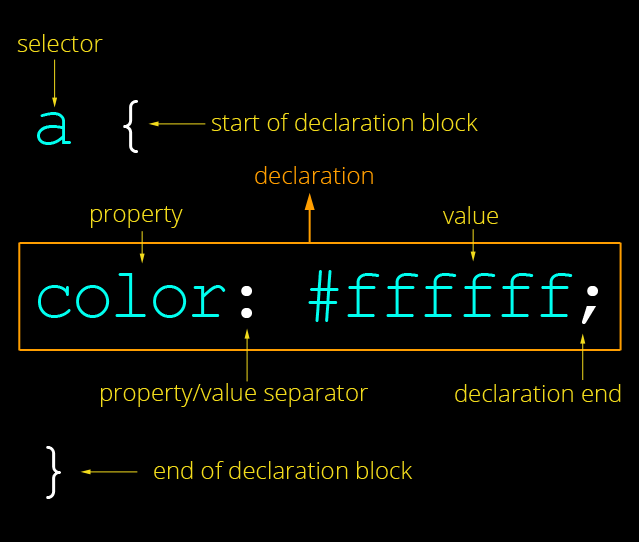

Brief projet Niveau 1 HTML / CSS
Sommair
- HTML
- CSS
- Conclusion
HTML
HTML est le langage de balisage standard pour la création de pages Web, HTML signifie Hyper Text Markup Language HTML décrit la structure d'une page Web de sorte que HTML se compose d'une série d'éléments qui indiquent au navigat eur comment afficher le contenu et les éléments HTML sont représentés par des balises qui nomment des parties du contenu telles que "titre", "paragraphe", "tableau", etc.

La déclaration définit ce document comme HTML5
L'élément < html> est l'élément racine d'une page HTML
L'élément < head> contient des méta-informations sur le document
L'élément < title> spécifie un titre pour le document
L'élément < body> contient le contenu de la page visible
< path> L'élément path est l'élément générique pour définir une forme. Toutes les formes basiques peuvent aussi être faites à partir de path.
L'élément < h1 ... 6> spécifier la taille de titre
L'élément < p> définit un paragraphe
< pre> Définit le texte préformaté< /pre>
< sub> Définit le texte en indice
< u> Définit un texte qui doit être stylistiquement différent du texte normal
< form> Définit un formulaire HTML pour l'entrée utilisateur
< input> Définit un contrôle d'entrée
< textarea> Définit un contrôle d'entrée multiligne (zone de texte)
< button> Définit un bouton cliquable
< select> Définit une liste déroulante
< img> Defines an image
< svg> Defines a container for SVG graphics
< head> Définit les informations sur le document
< meta> Définit les métadonnées d'un document HTML
< style> Defines style information for a document
< div> Defines a section in a document
< span> Defines a section in a document
< header> Defines a header for a document or section
< footer> Defines a footer for a document or section
< div> qui signifie division du document
CSS
Le CSS permet d'insérer des styles sur un code HTML et donc permet de définir très précisément le comportement de chaque élément de la page. On voit déjà des sites fait entièrement en CSS (contrairement à la majorité des sites qui sont fait en tableau) mais le problème de la compatibilité avec certains explorateurs ne permettent pas d'exploiter toutes les fonctions des feuilles de style.
Exemples des propriétés
| propriété | explication |
|---|---|
| font-family | Nom de police |
| font-size | Taille du texte |
| font-style | type de font |
| text-align | Alignement horizontal |
| vertical-align | Alignement vertical |
| color | Couleur de texte |
| background-color | Couleur de fond |
| width | Largeur |
| height | Hauteur |
| margin | marge |
| padding | marge intérieur |
| border-color | coleur de le bordure |
| display | Type d'élément (none, block, inline..) |
Conclusion
Le but de ce bref de formation initiation au HTML et CSS est de permettre aux étudiants d’appréhender les bases du HTML et CSS afin de pouvoir ensuite créer de manière autonome de cv. Le bref est une initiation, nous n’aurons pas le temps de voir en détail toutes les balises et permettre aux étudiants d’approfondir leur expertise.